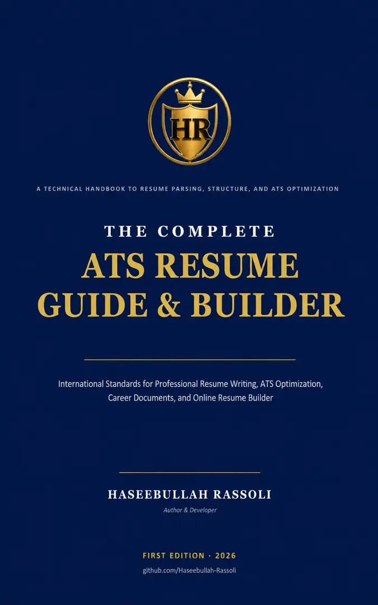
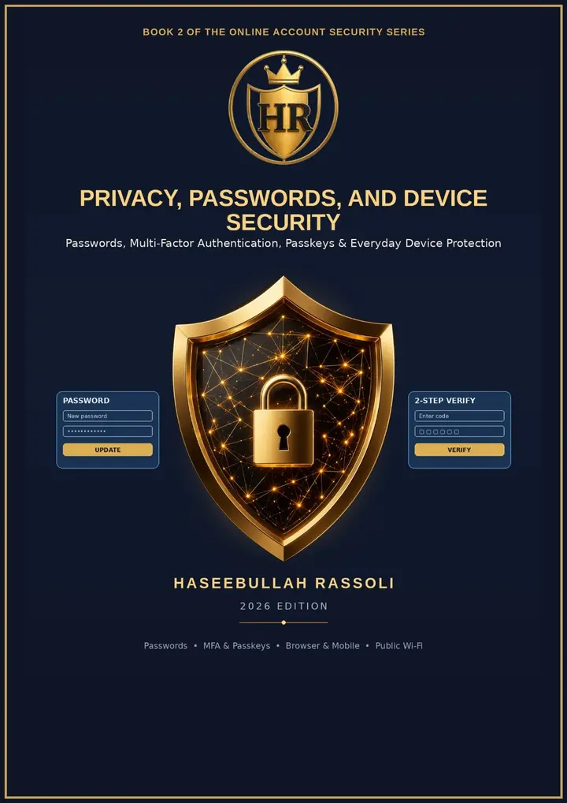

About & Contact
Read the mission, verification policy, privacy information, corrections process and ways to get in touch.
About the hub →LEARN • CHECK • PROTECT
Explore cybersecurity awareness, carefully reviewed opportunities, original books, practical career tools and digital services. The evidence comes first—and uncertainty is stated clearly.
FIVE MAIN SECTIONS
Explore our five connected areas, each with its own topics and resources.
Read the mission, verification policy, privacy information, corrections process and ways to get in touch.
About the hub →Understand phishing, fake interviews, scam warning signs and account protection. Submit a suspicious claim for possible review.
Learn about safety →Browse scholarship, bachelor’s, postgraduate, youth, job and training categories. Listings require original-source checks.
Browse categories →Explore published books, online-security guides and three free resume builders.
Open resources →Ask about premium research, digital media, content creation, social media management and clearly disclosed partnerships.
Explore services →COMMUNITY REVIEW
Received an unusual recruitment email or scholarship message? Send a redacted description for possible manual review. A submission is never automatically posted.
How to submit safely →Confirmed specific fact: supported by identified evidence from an original source.
Needs caution: observable warning signs or conflicting information.
Unconfirmed: insufficient evidence for a definite judgment.
We do not promise any message, website or opportunity is 100% safe, or make unsupported accusations.
FREE TOOLS & PUBLICATIONS

Practical resume writing, ATS guidance and useful tools.
Explore the books →
Practical guidance on safer accounts, privacy and digital devices.
Explore security books →Student, Professional and Executive resume builders hosted on GitHub Pages.
Open the resume tools →TRANSPARENCY
Every future reviewed opportunity or public case should show the relevant official sources, dates checked, limits of the findings and a route for corrections. We publish on the website first and share short summaries manually through social channels.
Read our verification method →